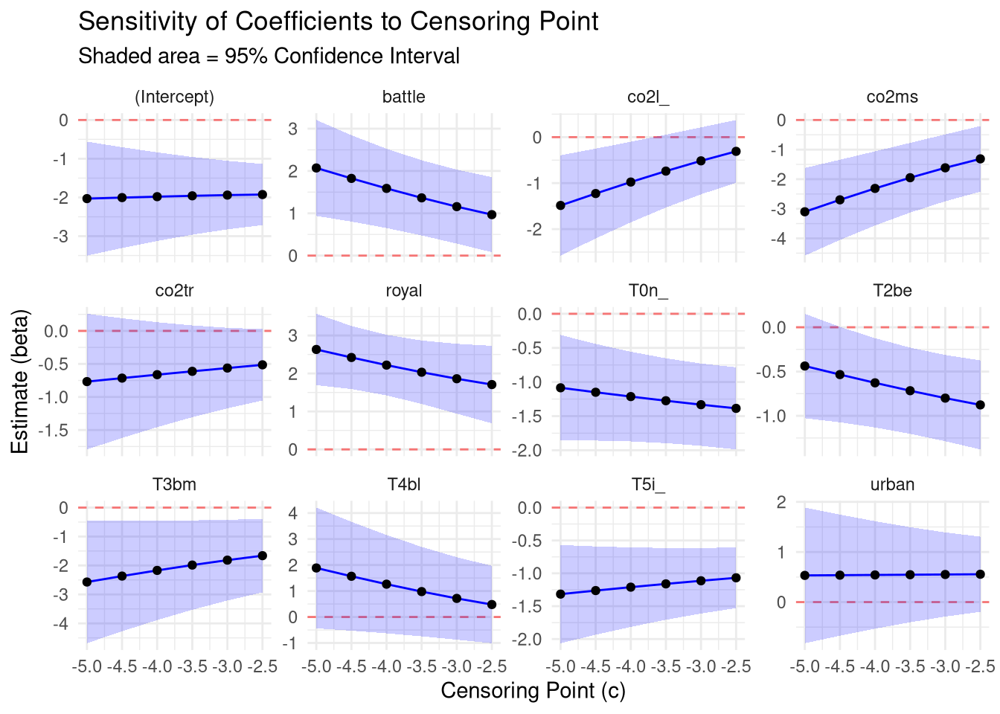

Report_Sensitivity
1. Discrepancies between the reported and implemented analysis
The paper states that the dependent variable is log-transformed after adding a small constant (0.05) to accommodate zero trauma shares. Our replication indicates this is not what was implemented. We confirmed that the authors’ Stata code does not include the “+ 0.05” transformation step; accordingly, reproducing the published results does not require (and is not consistent with) a \(\log(y + 0.05)\) specification.
Instead, the published estimates are exactly reproduced when the outcome is constructed as follows: the log is taken only for strictly positive trauma shares, and observations with a trauma share of zero are not transformed into a finite log value but are treated as left-censored at a fixed censoring point on the log scale (approximately −3). This is a substantively different procedure from adding a constant before logging. Under the implemented approach, zeros contribute to the likelihood through a censoring assumption (“latent below the threshold”) rather than through an observed transformed value. Because this censoring step is central to the model’s interpretation and to how zeros are handled, the mismatch between the paper’s description and the implemented code is consequential.
2. Why the censored Tobit/intreg approach is conceptually misaligned with the data
The authors likely employed the Tobit specification as a mechanical solution to the “log of zero” problem. However, this choice inadvertently imposes structural assumptions that are conceptually misaligned with bioarchaeological data. The trauma measure is a proportion derived from counts—trauma cases observed out of the number of examined skeletons in a site–period. In this setting, a zero share typically means “0 cases out of \(N\) examined,” not that an underlying continuous latent variable has been censored by a detection limit. Tobit’s key assumption—that there exists an unbounded latent normal outcome that can fall below a threshold and then becomes censored—does not naturally correspond to a “count out of \(N\)” data-generating process.
A related concern is that the information content of a zero depends heavily on the denominator. Observing 0 cases out of a large \(N\) provides much stronger evidence that the underlying rate is near zero than observing 0 cases out of a small \(N\). In the authors’ Tobit setup, zeros are handled via a fixed censoring point (roughly equivalent to a 5% violence rate). In the Tobit setup, both 0/5 and 0/500 enter as “left-censored below the same threshold”. Weights can change influence, but the likelihood still does not reflect the binomial sampling evidence that makes 0/500 far more informative than 0/5.
Finally, proportional/count outcomes have a mean–variance relationship dictated by binomial sampling (and often additional overdispersion). The Tobit framework assumes (on the latent scale) a constant-variance normal disturbance; analytic weights can rescale contributions to the likelihood, but they do not make the Tobit likelihood equivalent to the count-based sampling process that generated the data, nor do they automatically recover the correct dependence of variance on both \(N\) and the mean.
3. Why a beta-binomial model is conceptually better
A beta-binomial model matches the structure of the data directly. It models the observed number of trauma cases \(k\) out of \(n\) examined individuals, with the probability of trauma \(\pi\) linked to covariates (e.g., via a logit link). The binomial component handles the fact that the data are discrete counts bounded by \(n\); the beta component allows \(\pi\) to vary across site–periods beyond what a strict binomial would permit, capturing overdispersion that is plausible in aggregated bioarchaeological data.
This approach resolves the key conceptual issues above:
- Zeros are treated as ordinary outcomes with an exact probability \(P(k=0)\), rather than as censored latent values requiring an arbitrary censor threshold.
- Differences in denominators are handled natively through the likelihood: 0/500 and 0/10 are not treated as equivalent signals.
- Predicted means remain within [0, 1] by construction.
- Overdispersion can be modeled explicitly, which generally yields more credible uncertainty estimates than relying on a homoskedastic latent-normal assumption.
4. Empirical Analysis and Comparison
4.1 Sensitivity of the Tobit results to the censoring point
The Tobit specification requires choosing a censoring point \(c\) on the log scale (the paper’s implementation corresponds to approximately \(c \approx \log(0.05) \approx -3.0\)). Because this threshold is not implied by the underlying “count out of \(N\)” data-generating process, we re-estimated the full Tobit model across a grid of plausible censoring values \(c \in \{-5.0, -4.5, -4.0, -3.5, -3.0, -2.5\}\), holding the covariates, analytic weights, clustering, and estimation procedure fixed (see Figure 1 and Table 2).
Coefficient instability and sensitivity of statistical support. The figure and coefficient grid show that several effects shift materially as \(c\) changes. For example, T2be is not statistically significant at very low censor points (\(c = -5.0, -4.5\)) but becomes significant for higher thresholds (from \(c = -4.0\) onward). Conversely, co2l is statistically supported at lower censor points (\(c = -5.0, -4.5, -4.0\)) but loses support as the threshold rises (from roughly \(c = -3.5\) onward). Substantively, key context coefficients such as battle and royal also shrink as \(c\) increases, indicating that effect magnitudes are not stable to this modeling choice.
Fit vs. calibration trade-off. Within the Tobit likelihood, fit improves mechanically as \(c\) increases (logLik rises and AIC/BIC fall). However, this improvement coincides with sharply worsening calibration of zeros: while the observed weighted censoring rate is 0.125, the model’s predicted weighted censoring probability rises from 0.126 at \(c = -5.0\) to 0.600 at \(c = -3.0\) and 0.711 at \(c = -2.5\). Thus, the censor points that appear “best” by AIC/BIC correspond to the most implausible predicted frequency of zeros and exacerbate the model’s misalignment with the bounded outcome.
Implication. The Tobit results—and in particular which period and proxy effects appear statistically supported—are sensitive to an analyst-chosen censoring threshold. This sensitivity reinforces that the Tobit/censoring formulation is not a robust basis for inference in a “count-out-of-\(N\)” setting.
4.2 Comparing Model Fit and Predictive Accuracy to a Beta Binomial Specification
The analysis sample consists of \(N=82\) site-period observations (34 zero-trauma cases). To implement the Beta-binomial model, continuous proportions were reconstructed into integer counts, ensuring the approximation is small (mean absolute discrepancy 0.021), so the reconstructed counts closely track the original shares.
While the Tobit model technically reports a lower AIC (\(234.7\) vs \(329.5\)), these metrics are not comparable because the models operate on different outcome scales (continuous log-density vs. discrete counts). Instead, we rely on “common-scale” predictive checks, which reveal severe miscalibration in the Tobit specification:
- Predictive Validity (The “Exploding Mean” Failure): The Tobit model generates theoretically impossible predictions when projected back to the original scale. The weighted predicted mean trauma share for the Tobit model was 2,330.16, compared to an observed weighted mean of 0.091. This failure is systematic across periods: for example, the Tobit model predicts weighted means of 5,677 for period
T2beand 7,896 forT3bm, against observed means of \(< 0.10\). This occurs because the Tobit model applies analytic weights to the log-scale variance; when back-transformed to the natural scale, this inflated variance creates a heavy right tail that does not exist in the bounded \([0,1]\) data. - Zero-Inflation/Censoring: The Tobit model fundamentally misidentifies the frequency of zeros. It predicts a weighted zero rate of 59.9%, whereas the observed weighted zero rate is only 12.6%. The Beta-binomial model successfully recovers the data structure with a predicted zero rate of 16.4%.
- Residual Diagnostics: The Beta-binomial model shows no evidence of misspecification. DHARMa simulation-based diagnostics confirm the residuals conform to expected distributions (KS test \(p=0.59\)) and that dispersion is correctly modeled (\(p=0.36\)), with no significant zero-inflation (\(p=0.58\)).
5 Re-evaluating the Paper’s Conclusions
The choice of model alters the statistical significance of the findings, though not the direction of the effects (coefficient signs agree across all variables). The Beta-binomial analysis suggests that the “fine-grained” temporal fluctuations reported in the paper are not robust to a count model with overdispersion. The evidence for these finer period differences is sensitive to the Tobit/censoring specification.
Table 1: Comparison of Statistical Significance (\(p < 0.05\))
| Variable | Context | Tobit (Original) | Beta-Binomial (Corrected) | Assessment |
|---|---|---|---|---|
| Battle | Violence | Sig (\(p=.009\)) | Sig (\(p=.002\)) | Robust |
| Royal | Status | Sig (\(p<.001\)) | Sig (\(p<.001\)) | Robust |
| T3bm | Period 3 | Sig (\(p=.011\)) | Sig (\(p=.040\)) | Robust |
| T0n_ | Period 1 | Sig (\(p<.001\)) | NS (\(p=.521\)) | Not Supported |
| T2be | Period 2 | Sig (\(p=.001\)) | NS (\(p=.854\)) | Not Supported |
| T5i | Period 5 | Sig (\(p<.001\)) | NS (\(p=.663\)) | Not Supported |
| co2ms | Isotopes | Sig (\(p=.005\)) | Borderline (\(p=.051\)) | Sensitive to model |
| co2l | Isotopes | NS (\(p=.165\)) | Sig (\(p=.030\)) | New Finding |
Note: P-values derived from cluster-robust errors (N = 21 clusters).
A. Conclusions Supported by Both Models (Robust): * Violence & Status: Both models agree that battle and royal contexts are associated with significantly higher trauma prevalence. * Period T3bm: Both models identify the T3bm period as having significantly lower trauma than the baseline.
B. Conclusions Not Supported: The Tobit model identified three other periods (T0n_, T2be, T5i_) as having significantly lower trauma rates. The Beta-binomial model finds no evidence for this, suggesting these effects could be artifacts of treating small-sample zeros as high-certainty data points.
C. New Insights: * Carbon Isotopes: The model choice flips the significance of isotope proxies. In the Beta-binomial model, co2l (low Carbon) becomes a significant negative predictor (\(p=0.030\)), while the co2ms effect found in the Tobit model fades to borderline non-significance (\(p=0.051\)).
Summary: The robust evidence indicates a simpler story than originally claimed: violence spikes in specific contexts (Battles, Royal) and dips in T3bm, but other periods are statistically indistinguishable from the baseline once sample size is properly modeled.